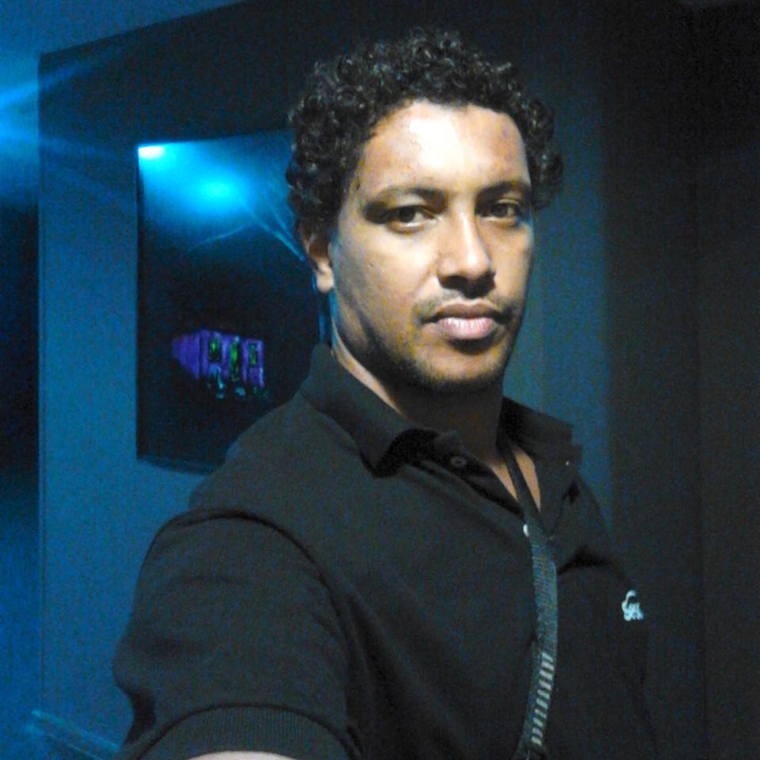

Sobre
Está vindo aí o Pré FISL Rio!
A edição é um dos muitos eventos de aquecimento para o FISL (Fórum Internacional de Software Livre) que irão acontecer pelo Brasil.
A versão carioca será cheia de palestras e workshops para veteranos e curiosos sobre Software Livre. Venha conosco preparar os motores para o FISL 17!
Localização
Senac: Rua Santa Luzia, 735 - 7º andar – Rio de Janeiro, Centro
Palestras
-
Hackeie a Wikipédia!
Henrique Andrade
Todos conhecem a Wikipédia, enciclopédia livre escrita por voluntários que é o quinto site mais acessado do mundo, mas poucos sabem do mar de possibilidades existentes no projeto para programadores e pesquisadores de dados. Nessa apresentação serão apresentadas formas de colaborar tecnicamente com a Wikipédia e seus projetos coirmãos assim como será demostrado como obter metadados públicos para pesquisas. Nessa apresentação pretende-se expor como se organiza a comunidade Movimento Wikimedia que mantém a Wikipédia e seus projetos coirmãos, como funciona o MediaWiki, CMS desenvolvido pela Wikimedia Foundation utilizado em nossos projetos e em milhares de outros sites e o que são e como desenvolver extensões e gadgets. Também demonstraremos o que fazem e como criar Bots, como acessar e o que encontrar em nossa API e nossos projetos de desenvolvimento mobile. Por fim iremos apresentar nossa Central de Dados onde podem ser encontrados resultados de pesquisas, dados brutos e instruções sobre como obter dados públicos dos projetos Wikimedia e iremos convidar os presentes a contribuir com os projetos, apresentando mais exemplos práticos de ferramentas criadas colaborativamente além do core do mediawiki.
-
Videografismo com Software Livre
Cadunico
Mostrar para o público que é possível editar vídeo e gerar videografismo utilizando somente software livre em todo processo.
-
Empoderamento feminino com uso do software livre
Julyane Miranda
Nessa palestra você vai conhecer algumas histórias de empoderamento feminino com o uso do software livre. Quais são as novidades no mercado de Tecnologia da Informação com essa abordagem e como usar algumas ferramentas para auxiliar mulheres em situação de risco.
-
Scrum: soluções simples para problemas complexos
Danielle Caled
Em ambientes de desenvolvimento de software, os projetos e suas especificações tendem a ser dinâmicos e adaptativos, necessitando de soluções iterativas e transparentes. O Scrum é um conjunto simples e eficiente de princípios, valores e práticas utilizado no gerenciamento de projetos que auxiliam no desenvolvimento de software através da sua execução por meio de ciclos iterativos e incrementais. O Scrum tem como premissas entregas rápidas, melhorias contínuas e rápida adaptação às mudanças. Ao longo dessa conversa, vamos apresentar uma introdução ao Scrum: seus pilares, papéis, conceitos e o funcionamento de uma sprint. Também abordaremos as ocasiões em que é recomendado utilizar Scrum, bem como as vantagens da metodologia. Concluiremos a apresentação com uma breve citação de algumas ferramentas livres utilizadas no apoio ao Scrum.
-

Do Midi a Música utilizando Software Livre
Sebastião Carlos
Apresentação de softwares livres que já se encontram disponíveis e estão conquistando seu espaço no mercado. Ferramentas estas utilizadas no intuito de chegar-se a um produto final mais profissional. Trilhando por este caminho nos deparamos com a realidade de um home studio: construção de trilhas por meio de midis onde as mudanças necessárias de timbres ocorrem através da utilização de soundfonts e DAWs .